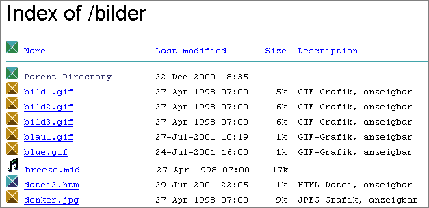

Webserver, die zum NCSA-Server kompatibel sind, kennen das Konzept der .htaccess-Dateien. Heute trifft das vor allem auf den immer dominanter werdenden und die Defacto-Standards im Web setzenden Webserver Apache zu. Wenn auf Ihrem Server-Rechner also ein Apache Webserver läuft, dann können Sie die Technik der .htaccess-Dateien einsetzen. Aber auch für andere Webserver gibt es vergleichbare Konzepte, um beispielsweise einen Zugriffsschutz zu realisieren. Falls Sie nicht wissen, welche Webserver-Software auf dem Rechner läuft, auf dem Sie Ihr Web-Projekt hosten, fragen Sie bitte Ihren Provider oder Webmaster.
.htaccess-Dateien sind Server-Konfigurationsdateien für Verzeichnisse, die zu Ihrem Web-Angebot gehören. So ist die .htaccess-Technik beispielsweise der übliche Weg, um nur bestimmten Benutzern den Zugriff auf bestimmte Daten zu erlauben. .htaccess ist also die Antwort auf die immer wieder gestellte Frage nach einem "richtigen" Passwortschutz. Doch mit .htaccess-Dateien können Sie noch viel mehr anstellen als Daten mit Passwörtern zu schützen. So können Sie auch ganze Benutzerkreise automatisch (ohne Passwortzugang) aussperren oder alle bis auf bestimmte aussperren. Sie können Optionen zum so genannten Verzeichnis-Browsing (Web-Browser ruft ein Verzeichnis auf, in dem keine Default-Datei wie z.B. index.htm liegt) einstellen. Sie können automatische Weiterleitungen einstellen oder eigene Regelungen für den Fall von HTTP-Fehlermeldungen schaffen. Sie können sogar abhängig von bestimmten Bedingungen alternative Inhalte anbieten, beispielsweise Webseiten mit unterschiedlichen Landessprachen abhängig von der Sprache des benutzten Web-Browsers - ohne CGI, ohne JavaScript. Und schließlich können Sie sogar einstellen, ob Daten komprimiert an den aufrufenden Browser übertragen werden können oder ob bei Aufrufen einzelner zu Ihrem Projekt gehörender Adressen auf eine andere URL umgeleitet werden soll.
Dateien mit dem Namen .htaccess (das erste Zeichen ist ein Punkt) sind Bestandteile der Konfiguration des Webservers. Die Arbeitsweise des Webservers wird mit Hilfe einer (oder mehrerer) zentraler Konfigurationsdatei(en) definiert - die httpd.conf. Doch diese liegt bzw. liegen normalerweise innerhalb des Programmverzeichnisses des Webservers selbst, worauf Benutzer, die ein Web-Projekt verwalten, in aller Regel keinen Zugriff erhalten. Der Server-Administrator legt in dieser zentralen Konfiguration fest, welche Berechtigungen er welchen Benutzern oder auch welchen Webangeboten (virtuellen Hosts) zugestehen möchte. Nur dann, wenn ein Benutzer das Recht erhalten soll, die Vorgaben aus der zentralen Konfiguration zu überschreiben und individuell neu festzulegen, wird ihm die Nutzung von .htaccess-Dateien erlaubt. .htaccess-Dateien kann er dann in dem Verzeichnisbereich anlegen und bearbeiten, in dem sein Web-Angebot liegt. Dort, wo Sie Ihre HTML-Dateien, Grafikdateien usw. betreuen, können Sie also auch .htaccess-Dateien ablegen, falls Ihr Provider Ihnen diese Möglichkeit einräumt. Der Einsatz von .htaccess in Apache bedeutet, dass der Webserver bei jedem einzelnen Seitenzugriff vom angeforderten Dokument aus rekursiv sämtliche Verzeichnisse überprüfen muss, ob irgendwo eine solche Datei liegt. Und diese Information darf er nicht zwischenspeichern - denn die von .htaccess-Dateien konfigurierten Servereinstellungen sollen unmittelbar in demselben Moment gültig sein, in dem die .htaccess-Datei existiert, ohne Server-Neustart. Die Dezentralisierung der Konfiguration kostet also auch etwas Rechnerleistung.
Dass der Name .htaccess mit einem Punkt beginnt, ist eine Tradition aus der Unix-Welt. Dort beginnen viele verzeichnisspezifische Konfigurationsdateien mit einem Punkt, wodurch sie als "versteckt" gekennzeichnet werden. Bekannt ist beispielsweise die Datei .profile. Dateien, deren Name mit einem Punkt beginnt, werden von dem Unix-Konsolenbefehl "ls" nur aufgelistet, wenn mit der Option "-a" ausdrücklich angegeben wird, versteckte Dateien zu zeigen. Setzen Sie zur Verwaltung Ihres Webangebots einen grafischen FTP-Client ein, kann es Ihnen daher passieren, dass eine .htaccess-Datei, die Sie gerade hochgeladen haben, plötzlich nicht mehr zu existieren scheint. Und schließlich muss der Name auch nicht unbedingt .htaccess lauten, dieser Name hat sich lediglich als Konvention durchgesetzt. In der zentralen Konfiguration des Apache lässt sich auch ein beliebiger anderer Dateiname einstellen.
.htaccess-Dateien sind reine Textdateien, die mit einem Texteditor bearbeitet werden können. Wenn Sie Telnet- oder SSH-Zugang zu demjenigen Server-Rechner haben, auf dem Ihr Web-Angebot liegt, können Sie solche Dateien direkt auf dem Server erstellen und bearbeiten, indem Sie dort einen geeigneten Texteditor aufrufen (auf Unix-Systemen z.B. den vi-Editor). Wenn Sie nur FTP-Zugang zu dem Server-Rechner haben, können Sie eine solche Datei auf Ihrem lokalen PC mit einem Texteditor erstellen und dann hochladen. Auf einem Windows-System dürfen Sie allerdings solche Dateinamen, die mit einem Punkt beginnen, nicht unmittelbar vergeben, da Windows den Punkt anders versteht. Sie müssen in Ihrem Texteditor die Option "Speichern unter" wählen und darauf achten, dass der Editor nicht selbständig aus diesem Namen den Dateinamen .htaccess.txt macht.
.htaccess-Dateien gelten stets für das Verzeichnis, in dem sie abgespeichert werden, sowie für alle Unterverzeichnisse davon und für deren Unterverzeichnisse. Wenn Sie in einem der Unterverzeichnisse andere Regelungen wünschen, müssen Sie dort wiederum eine .htaccess-Datei ablegen. Die Angaben der jeweils aktuellen Datei überschreiben die Angaben von .htaccess-Dateien aus darüberliegenden Verzeichnissen.
Das Konzept, .htaccess-Dateien einzusetzen, gehörte zwar nahezu von Anfang an zum Apache, jedoch wurde die Zahl der erlaubten Anweisungen von Version zu Version größer, womit sich auch der Umfang dessen, was in einer .htaccess-Datei konfiguriert werden kann, beständig erweiterte. Sollte eines der hier genannten Beispiele bei Ihnen nicht funktionieren, so informieren Sie sich bitte über die Version des eingesetzten Webservers und schlagen Sie in der Apache-Dokumentation nach, um herauszufinden, ob die Anweisung in Ihrer Apache-Version bereits eingesetzt werden kann.
Die Thematik ist wesentlich umfangreicher, als hier in einem kurzen Abriss dargestellt wird. Es können Ihnen nur die wichtigsten Einsatzgebiete benannt werden, für die .htaccess-Dateien genutzt werden können.
Sie können in einer .htaccess-Datei genau dieselben Anweisungen notieren, die in der zentralen Konfigurationsdatei Verwendung finden - mit nur wenigen Ausnahmen. Beispielsweise dürfen Sie keine zusätzlichen Module laden, den Servernamen nicht ändern und keinen zusätzlichen Speicherplatz (DocumentRoot) anfordern. Auch <Directory ...>-Container sind generell in so einer dezentralen Konfigurationsdatei ebensowenig zulässig wie Festlegungen für neue virtuelle Hosts. Wenn Sie solche Wünsche haben, so setzen Sie sich bitte mit Ihrem Provider bzw Webmaster in Verbindung - oder wenn Sie einen lokal installierten Apache nutzen, ändern Sie die httpd.conf. Sonst haben Sie aber sehr weitgehende Freiheiten. So ist es durchaus möglich, dass Sie Anweisungen nutzen, die in der zentralen Konfigurationsdatei nicht vorhanden sind, beispielsweise für Spracheinstellungen oder für ganz bestimmte Zeichensätze oder MIME-Typen. Prinzipiell dürfen Sie dies alles selbst konfigurieren. Denken Sie aber daran, dass es in jedem Verzeichnis nur eine einzige .htaccess-Datei geben kann, in der Sie alles das notieren müssen, was Sie konfigurieren wollen. Zur Strukturierung und damit besseren Lesbarkeit für Sie empfiehlt sich der sparsame Einsatz einiger weniger Kommentarzeilen.
Trotz dieser prinzipiell vielfältigen Möglichkeiten kann es aber teilweise drastische Einschränkungen geben. Welche Anweisungen Ihnen tatsächlich zur Verfügung stehen, hängt davon ab, wie weitgehend die Rechte sind, die Ihnen der Server-Administrator mit Hilfe der Anweisung AllowOverride in der zentralen Konfigurationsdatei einräumt.
Beachten Sie:
Die Anweisung AllowOverride kann nicht innerhalb einer .htaccess notiert werden, sondern wird ausschließlich vom Server-Administrator in der zentralen Konfigurationsdatei vorgegeben. Um den AllowOverride-Wert in Erfahrung zu bringen, benötigen Sie Einsicht in die Serverkonfiguration. Kontaktieren Sie dazu gegebenenfalls Ihren Webhosting-Provider. Dieser kann den Wert auch ändern, falls Sie bestimmte bisher nicht erlaubte Anweisungen verwenden möchten. Im einzelnen gibt es dafür folgende mögliche Werte:
- Mit
AllowOverride None wird der Webserver angewiesen, .htaccess-Dateien zu ignorieren. Das ist im Übrigen die Voreinstellung.
- Mit
AllowOverride All wird festgelegt, dass in einer .htaccess-Datei (so gut wie) sämtliche zentrale Vorgaben überschrieben und damit abgeändert werden dürfen. Das kann bedeuten, dass Vorhaben, die eigentlich verboten sind (beispielsweise die Ausführung von CGI-Scripts), mit Hilfe einer .htaccess-Datei erlaubt werden. Als Server-Administrator werden Sie diese Anweisung also nur sehr vorsichtig einsetzen.
- Mit
AllowOverride Options wird festgelegt, dass in einer .htaccess-Datei Anweisungen zur Steuerung spezieller Verzeichniseigenschaften zulässig sind.
- Mit
AllowOverride Limit wird festgelegt, dass in einer .htaccess-Datei Zugriffe von bestimmten Hosts erlaubt oder untersagt werden können.
- Mit
AllowOverride Indexes wird festgelegt, dass in einer .htaccess-Datei Anweisungen zur Steuerung von Verzeichnisindizes zulässig sind.
- Mit
AllowOverride FileInfo wird festgelegt, dass in einer .htaccess-Datei Anweisungen zur Akzeptanz bestimmter Dokumenttypen zulässig sind - beispielsweie, um Individuelle Fehlermeldungen ausgeben zu können.
- Mit
AllowOverride AuthConfig wird festgelegt, dass in einer .htaccess-Datei Autorisierungsanweisungen stehen dürfen - das betrifft beispielsweise Regelungen zum Passwortschutz.
Diese Werte können auch miteinander kombiniert werden. All ist der mächtigste Parameter, mit dem alles das zugelassen wird, was die anderen Parameter steuern.
.htaccess-Dateien sind verzeichnisspezifisch. Speichern Sie die .htaccess-Datei also in demjenigen Verzeichnis ab, in dem die zu schützenden Daten liegen. Sie können wahlweise das ganze Verzeichnis mit all seinen Unterverzeichnissen oder nur bestimmte Dateien oder Dateitypen schützen. Sie können den Passwortschutz außerdem wahlweise für einzelne Benutzer oder für ganze Benutzergruppen einrichten. Auch Kombinationen beider Formen sind möglich. Damit der Verzeichnisschutz mit Passwort funktioniert, genügt die .htaccess-Datei alleine allerdings nicht. Sie brauchen zusätzlich eine Datei, in der die Benutzernamen und die zugehörigen Passwörter stehen. Falls Sie mit Benutzergruppen arbeiten, benötigen Sie außerdem noch eine Datei, in der die Benutzergruppen definiert werden. Auch diese beiden anderen Dateien werden mit einem beliebigen Texteditor erstellt.
Beispiel: .htaccess-Datei
# .htaccess-Datei für Web-Verzeichnis /service
AuthType Basic
AuthName "Service-Bereich"
AuthUserFile /usr/verwaltung/web/.htusers
AuthGroupFile /usr/verwaltung/web/.htgroups
Require user Werner Dieter Heidi
Require group Servicetechniker
Erläuterung:
Die erste Zeile der Beispieldatei ist lediglich ein Kommentar. Solche Kommentarzeilen müssen mit dem Gatterzeichen # eingeleitet werden. Alle anderen Zeilen haben einen einheitlichen Aufbau: Sie beginnen mit Schlüsselwörtern (den eigentlichen Anweisungen), und dahinter folgen, durch ein oder mehrere Leerzeichen getrennt, Angaben dazu. Leerzeilen, die die Lesbarkeit verbessern, sind erlaubt, werden aber vom Webserver ignoriert. Zeilen mit Angaben, die der Webserver nicht interpretieren kann, führen jedoch grundsätzlich zu einem "Internal Server Error" ( HTTP-Status-Code 500).
Um einen Passwortschutz einzurichten, brauchen Sie die Anweisungen AuthType, AuthName, AuthUserFile, und wenn Sie mit Benutzergruppen arbeiten, auch AuthGroupFile. Ferner benötigen Sie eine oder mehrere Angaben der Anweisung Require.
Mit AuthType wird die Art der Authentifizierung bezeichnet. Die meist gebrauchte Angabe ist Basic für die sogenannte HTTP Basic Authentication (einfache Authentifizierung über HTTP). Dabei stehen die Benutzernamen und die zugehörigen Passwörter in einer noch anzugebenden Datei. Diese Methode verlangt aber, dass das Passwort unverschlüsselt vom Browser an den Webserver übermittelt wird. Sie ist daher nicht wirklich sicher. Die Alternative für den Authentifizierungstyp ist Digest. Dabei werden Passwörter bereits in verschlüsselter Form abgefordert, allerdings beherrschen das nicht alle Browser. Sie müssen daher entscheiden, was für Sie Vorrang hat: höhere Sicherheit oder die Berücksichtigung der Browser und Clients, die nur die einfache Authentifizierung unterstützen.
Mit AuthUserFile wird die Datei angegeben, in der die Namen der autorisierten Benutzer und ihre Passwörter stehen. Es sollte der vollständige absolute Pfadname angegeben werden. Das ist also nicht der Pfad ab dem Wurzelverzeichnis Ihres Web-Projekts. Fragen Sie dazu gegebenenfalls Ihren Webhosting-Provider oder Webmaster. Sie können zwar auch eine Angabe machen, die relativ zum Wurzelverzeichnis des Webservers (das oft /usr/lib/apache/ lautet) interpretiert wird. In der Regel ist das aber ein zentrales Installationsverzeichnis, auf das Sie keinen Zugriff haben.
Im Interesse der Sicherheit ist es günstiger, die Datei mit den Namen der Benutzer und ihren Passwörtern außerhalb des Web-Projekts auf dem Server abzulegen. Aber bei kaum einem Hosting-Angebot können Sie auf Systemverzeichnisse des Server-Rechners außerhalb des eigenen Web-Projekts zugreifen. Wenn nicht ausdrücklich vom Provider bzw. Webmaster anders bestimmt, sollten Sie außerdem für die Datei einen Namen wählen, der mit .ht beginnt, üblicherweise eben .htusers oder .htpasswd. In der Konfiguration des Apache-Servers sind solche Dateinamen als Grundeinstellung vorgegeben und werden, wie oben bereits erläutert, aufgrund des vorangestellten Punktes nicht zur Ansicht freigegeben, bleiben also vor Besuchern verborgen. Das Gleiche gilt für die Gruppendatei, falls Sie mit Benutzergruppen arbeiten. Diese wird mit AuthGroupFile angegeben. Alternativ können Sie aber mit Hilfe des Containers <Files> auch eigene Schutzregeln definieren und eigene Namen für diese Dateien vergeben.
Bei Require geben Sie als zweites Schlüsselwort entweder user oder group an, je nachdem, ob Sie Zugriffsbestimmungen für einzelne Benutzer oder Benutzergruppen festlegen möchten. Hinter diesem Schlüsselwort können ein oder mehrere Namen von Benutzern oder Benutzergruppen folgen. Alternativ können Sie auch das Schlüsselwort valid-user benutzen, um alle Benutzer zuzulassen, falls die Liste sonst zu lang werden würde.
Im obigen Beispiel werden die drei Benutzer Werner Dieter Heidi sowie alle Benutzer der Gruppe Servicetechniker angegeben. Damit der Passwortschutz funktioniert, müssen nun die angegebenen Dateien mit den Benutzernamen und (falls benötigt) den Gruppen angelegt werden.
Beispiel: .htusers-Datei unter Unix
# BenutzerDatei für Web-Projekt
Werner:INY8//m5KMwIc
Manfred:69gY8YPjQXeN6
Janine:INw2mPEH.owe2
Anke:INh6DHvyejvf2
Bernd:INboWuvjjwQ7E
Karin:INwOXOz96UQOU
Christina:INXo9kh0M.anc
Andreas:INeRD/cUQIFP6
Dieter:INUnlKdkNZ6RQ
Heidi:IN20ffIEEV1H6
Beispiel: .htusers-Datei unter Windows
# BenutzerDatei für Web-Projekt
Werner:Herakles
Manfred:Dionysos
Janine:Olympia
Anke:Hydra
Bernd:Poseidon
Karin:Hera
Christina:Athena
Andreas:Apollon
Dieter:Achilles
Heidi:Diana
Erläuterung:
Auch in solchen Dateien sind Kommentarzeilen erlaubt, eingeleitet durch #. Ansonsten enthält jede Zeile der Benutzerdatei einen Benutzernamen, und gleich dahinter, durch einen Doppelpunkt getrennt, das Passwort. Der Apache-Webserver erlaubt entweder unverschlüsselte Passwörter (unter Windows), oder verschlüsselte nach den Methoden Crypt oder MD5 (alle Plattformen einschließlich Windows).
Falls Sie damit nichts anfangen können, können Sie das folgende kleine Formular verwenden. Geben Sie darin das gewünschte Passwort ein. Das Formular ruft beim Absenden ein CGI-Script im Web auf. Als Ergebnis erhalten Sie das nach der Methode Crypt verschlüsselte Passwort. Dazu muss jedoch eine Verbindung ins Internet bestehen.
Zusammen mit dem Apache wird ein kleines Hilfsprogramm ausgeliefert, das die Erstellung solcher Passwortdateien vereinfacht. Es heißt htpasswd (unter Windows: htpasswd.exe) und ist über die Konsole (Eingabeaufforderung) zu bedienen. Rufen Sie es einfach mit dem Befehl htpasswd -h auf, um eine kurze Hilfe zu seiner Verwendung zu erhalten. Im einfachsten Fall geben Sie zum Beispiel
htpasswd -c .htusers smuenz
ein. Es wird eine neue Passwortdatei angelegt. Sie müssen für den neuen Benutzer "smuenz" ein Passwort angeben und bestätigen. Diese Passwortdatei können Sie dann in das vorgesehene Verzeichnis verschieben oder hochladen.
Beispiel: .htgroups-Datei
# GruppenDatei für Web-Projekt
Servicetechniker: Andreas Karin Janine
Erläuterung:
Gruppendateien bestehen aus Einträgen, bei denen zunächst ein Gruppenname notiert wird und dahinter, nach einem Doppelpunkt, die Namen von Benutzern, die zu dieser Gruppe gehören. Es müssen Benutzernamen sein, für die in der Benutzerdatei ein Eintrag angelegt wurde.
Die Gruppendatei wird im Beispiel nur benötigt, weil in der .htaccess-Datei eine Benutzergruppe angegeben wurde; die Gruppendatei wird ausschließlich dann erforderlich, wenn Sie Gruppennamen benutzen. In einem Intranet ist auch eine Benutzerdatei nicht zwingend erforderlich, da Sie Zugriffserlaubnisse und -verbote über die Zulassung bzw. den Ausschluss der internen IP-Adresse regeln können.
Effekt:
Alle Besucher des Web-Projekts, die nun versuchen, auf das Verzeichnis mit der .htaccess-Datei zuzugreifen, bekommen von ihrem Browser einen Dialog angeboten, in dem sie Benutzernamen und Passwort eingeben müssen. Nur Besucher, die sich mit einer gültigen Kombination aus Benutzernamen und Passwort anmelden, haben Zugriff auf das Verzeichnis.
So wie im obigen Beispiel gezeigt, gilt der Zugangsschutz für das Verzeichnis, in dem die .htaccess-Datei liegt, und für alle Verzeichnisse unterhalb davon. Sie können den Schutz aber auch auf bestimmte Dateien, Dateitypen oder Zugriffsmethoden einschränken.
Beispiel: .htaccess-Datei
# .htaccess-Datei für Web-Verzeichnis /service
AuthType Basic
AuthName "Service-Bereich"
AuthUserFile /usr/verwaltung/web/.htusers
AuthGroupFile /usr/verwaltung/web/.htgroups
<Files *.htm>
Require user Werner Dieter Heidi
Require group Servicetechniker
</Files>
Erläuterung:
Um den Schutz einzuschränken, benutzen Sie ähnlich wie in HTML oder XML Tags mit spitzen Klammern. Im einleitenden Tag kann hinter der öffnenden spitzen Klammer entweder Files stehen, wie im obigen Beispiel. Dahinter können Sie genau eine einschränkende Angabe machen. Mit *.htm wie im Beispiel beschränken Sie den Schutz auf HTML-Dateien. Mit einer Angabe wie geheim.htm würde nur diese eine Datei geschützt. Anstelle von Files können Sie auch FilesMatch einsetzen. Dann sind Reguläre Ausdrücke möglich. Beispielsweise würden Sie mit <FilesMatch "\.(htm|php)$"> alle HTML-Dokumente und alle PHP-Scripts erfassen.
Eine weitere Möglichkeit besteht darin, anstelle von Files die Anweisung Limit, oder besser noch LimitExcept anzuwenden. Diese Anweisung steht aber erst seit der Apache-Version 2.0.20 zur Verfügung. Sie hat Auswirkungen auf HTTP-Methoden wie GET, POST, PUT, DELETE, CONNECT, OPTIONS usw. Mit <LimitExcept GET> können Sie für alle Zugriffsmethoden Bedingungen formulieren, mit Ausnahme von GET - und mit Mit <LimitExcept POST> würden Sie für alle Zugriffsmethoden mit Ausnahme von POST Zugriffsbedingungen formulieren können, falls der Webserver mindestens ein Apache 2.0.20 oder neuer ist.
Beachten Sie:
Falls es bei Ihnen einfach nicht klappen will mit dem Schützen von Verzeichnissen, dann könnte der Grund darin liegen, dass in der zentralen Konfiguration des Apache Webservers beim Eintrag AllowOverride der Wert None gewählt wurde.
Schutzmechanismen, die Sie mit Hilfe von .htaccess-Dateien erstellen, sind auf HTTP-Ebene wesentlich sicherer als solche, die mit Hilfe von CGI-Scripts oder gar mit Hilfe von JavaScript erstellt werden. Dennoch sollten Sie beachten, dass .htaccess keinen Generalschutz bietet. Der Schutz gilt nur, wenn Web-Browser oder andere Web-Clients über den Webserver geschützte Daten anfordern. Er gilt nicht, wenn der Zugriff z.B. mit einem anderen Internet-Protokoll wie FTP erfolgt.
Sie können bestimmte IP-Adressen oder IP-Bereiche davon ausschließen, auf Webseiten zuzugreifen. Ebenso können Sie alle IP-Adressen ausschließen und nur ganz bestimmten den Zugriff erlauben. Anwender, die über eine nicht autorisierte IP-Adresse zugreifen, erhalten dann eine HTTP-Fehlermeldung (den HTTP-Status-Code 403), und der Zugriff wird ihnen verweigert.
Sinnvoll ist das beispielsweise, wenn Ihr Web-Angebot nur den Mitarbeitern Ihrer Firma im firmeninternen Intranet zugänglich sein soll. In einem solchen Fall kennen Sie vermutlich die vorhandenen Netze, möglicherweise sogar alle im Intranet fest vergebenen IP-Adressen. Oder Sie möchten bestimmte Anwender, die mit festen IP-Adressen unterwegs sind, ausschließen.
Beispiel: .htaccess-Datei
# Datei zum Regeln von IP-Bereichen
Order deny,allow
Deny from .aol.com
Deny from 192.168
Allow from 192.168.220.102
Erläuterung:
Zunächst legen Sie mit Order die logische Interpretationsreihenfolge der nachfolgenden Angaben fest. Möglich ist die Angabe deny,allow wie im Beispiel, oder auch die umgekehrte Reihenfolge.
In Zeilen, die mit Deny from oder Allow from beginnen, geben Sie eine konkrete IP-Adresse, einen Teil davon, eine Namensadresse oder einen Teil davon an. Mit Deny from verbieten Sie den Zugriff für den oder die angegebenen Benutzer, und mit Allow from erlauben Sie den Zugriff. Auch in der zentralen Konfigurationsdatei können für <Directory>-Container bereits solche Regelungen getroffen worden sein, die Sie dann in der .htaccess-Datei erweitern oder bei Bedarf korrigieren können. Im obigen Beispiel werden alle Benutzer ausgesperrt, die mit einer AOL-Kennung surfen, (.aol.com), sowie alle Benutzer mit einer numerischen IP-Adresse des Bereichs 192.168. Das ist einer der "privaten" IP-Bereiche, also Ihr Intranet. Um aber einem bestimmten Benutzer aus diesem Bereich doch den Zugriff zu erlauben, wird im Beispiel anschließend noch mit Allow from dessen spezifische IP-Adresse angegeben.
Die Angabe wird einfach als Teilzeichenkette interpretiert. Wenn ein Client eine Webseite in dem Verzeichnis mit der .htaccess-Datei aufruft, vergleicht der Webserver, ob eine der notierten Zeichenketten in derjenigen Zeichenkette vorkommt, die der aufrufende Client dem Server übermittelt. Um mehr über die möglichen Zeichenketten zu erfahren, die in der Praxis übermittelt werden, empfiehlt sich ein Blick in die Log-Dateien des Webservers.
Beachten Sie:
Anstelle einer bestimmten Zeichenkette können Sie auch Allow from all bzw. Deny from all notieren, um eine generelle Erlaubnis oder ein generelles Verbot zu formulieren. Wenn Sie beispielsweise keinerlei Einschränkungen für nötig halten, geben Sie mit Allow from all Ihr Verzeichnis frei. Soll Ihr Webangebot dagegen lediglich Ihrem Firmennetz zur Verfügung stehen, so notieren Sie:
Order deny,allow
Deny from all
Allow from 192.168
Beim Aussperren und Einschließen bestimmter IP-Adressen, IP-Bereiche oder Namensadressen sind die gleichen erweiterten Möglichkeiten erlaubt wie beim Passwortschutz. Die Anweisungen mit Deny from und Allow from können dabei in entsprechende Tags eingeschlossen werden. So lässt sich z.B. das Aussperren bestimmter Benutzer oder Benutzerkreise auf bestimmte Dateien oder Zugriffsmethoden beschränken.
Beispiel: .htaccess-Datei
# .htaccess-Datei für Web-Verzeichnis /service
AuthType Basic
AuthName "Service-Bereich"
AuthUserFile /usr/verwaltung/web/.htusers
Require valid-user
Order deny,allow
Deny from all
Allow from 192.168
Satisfy any
Erläuterung:
In diesem Beispiel wird Require zusammen mit Allow from und Deny from verwendet. Die Anweisung Satisfy gibt an, welche der Bedingungen erfüllt sein müssen. Das Schlüsselwort any bedeutet, dass alle Benutzer mit einer numerischen IP im Bereich 192.168 automatisch zugelassen sind. Benutzer, die nicht von dort kommen, werden nach einem Benutzernamen und Passwort gefragt ("Oder"-Verknüpfung der beiden Bedingungen). Hingegen würde das Schlüsselwort all bedeuten, dass nur Benutzer mit einer IP aus dem Bereich 192.168 und einem gültigen Benutzernamen zugelassen sind ("Und"-Verknüpfung der beiden Bedingungen).
Mit Hilfe einer .htaccess-Datei können Sie alle zentralen Verzeichnis-Optionen, die in der Konfiguration des Webservers eingestellt sind, für das entsprechende Verzeichnis und seine Unterverzeichnisse ändern. Voraussetzung ist allerdings, dass in der zentralen Webserver-Konfiguration mindestens AllowOverride Options Indexes FileInfo eingetragen ist. Wenn nicht, dann werden Angaben für andere Verzeichnis-Optionen in Ihrer .htaccess-Datei ignoriert.
Beispiel: .htaccess-Datei
# Datei für Verzeichnis /bilder
Options +ExecCGI -Indexes
DirectoryIndex erste.htm start.htm
Erläuterung:
Mit Options können Sie verschiedene wichtige Grundeinstellungen ändern, die der Webserver für Verzeichnisse verwendet. Hinter Options können Sie eine oder mehrere der folgenden Angaben notieren:
All erlaubt alles bis auf das Definieren alternativer Inhalte. Dies ist die Voreinstellung und gilt auch, wenn Sie nichts explizit angeben möchten.
+ExecCGI erlaubt das Ausführen von CGI-Scripts im Verzeichnis, falls es zentral nur im definierten CGI-Verzeichnis erlaubt ist, und -ExecCGI verhindert es, sofern es zentral in allen Verzeichnissen erlaubt ist.
+Includes erlaubt das Ausführen von Server Side Includes im Verzeichnis, falls es zentral verboten ist, und -Includes verhindert es, sofern es zentral erlaubt ist.
+IncludesNOEXEC erlaubt das Ausführen von Server Side Includes, die kein CGI-Script ausführen, -IncludesNOEXEC verbietet solche Server Side Includes.
+Indexes erlaubt Verzeichnis-Browsing, falls es zentral verboten ist, und -Indexes verhindert es, sofern es zentral erlaubt ist. Beim Verzeichnis-Browsing wird der Inhalt des Verzeichnisses im Browser aufgelistet, falls nur das Verzeichnis aufgerufen wird (z.B. http://www.ihr-name.de/bilder/) und dort keine Datei mit einem Namen zu finden ist, der "Index-Funktion" hat.
+MultiViews erlaubt das Definieren alternativer Inhalte, -MultiViews schaltet es aus.
Im Normalfall ist der Webserver so konfiguriert, dass er das "Stöbern" im Verzeichnis zulässt, falls dort keine Datei mit "Index-Funktion" existiert. Das sind in der Einstellung der meisten Webserver Dateien mit Namen wie index.htm oder index.html.
Mit DirectoryIndex können Sie andere Dateinamen bestimmen, die in diesem Verzeichnis und seinen Unterverzeichnissen als Dateien mit Index-Funktion gelten. Sie können beliebig viele Dateinamen angeben, welche dann in der Reihenfolge ihrer Angabe geprüft werden, falls mehrere von ihnen gleichzeitig im selben Verzeichnis existieren.
Beachten Sie:
Sie müssen die Vorzeichen - und + nicht unbedingt angeben. Werden sie angegeben, so bewirken sie eine Korrektur eventuell in der zentralen Konfuguration vorhandener Einstellungen. Werden sie nicht angegeben, so werden eventuelle Voreinstellungen überschrieben.
Per Voreinstellung zeigt der Webserver eine in seiner Konfiguration festgelegte HTML-Datei oder eine hart kodierte Fehlermeldung an, wenn ein Zugriffsfehler passiert, z.B. wenn eine angeforderte Datei nicht existiert. Auch dies können Sie ändern.
Mit ErrorDocument definieren Sie eine eigene Meldung oder Datei, die im Fehlerfall angezeigt wird. Hinter dem Schlüsselwort notieren Sie den gewünschten HTTP-Status-Code - typische Fehler, die auftreten können, sind jene mit den Nummern 403, 404 und 500. Hinter der Nummer mit dem Status-Code können Sie entweder in Anführungszeichen eine eigene Fehlermeldung notieren, oder Sie geben die Adresse einer Webseite an, die im Fehlerfall angezeigt werden soll. Es gibt drei mögliche Varianten:
1. hart kodierte Meldungen
Das bedeutet, dass die Meldung direkt vom Webserver erzeugt wird. Der Wortlaut muss also auch vorgegeben werden, was in folgenden Formen geschehen kann:
Beispiel 1: hartkodierte Fehlermeldung als reiner Text
# Text für individuelle Fehleranzeige
ErrorDocument 404 "Ups. Was haben Sie denn da für Unsinn angestellt -\
die angeforderte Ressource gibts hier ja gar nicht ;-)"
Beachten Sie:
Zugegeben, der Text ist etwas frech, variieren Sie ihn bitte und wählen Sie eine höflichere Ausdrucksweise. Sie können einen beliebig langen Text notieren, aber es muss alles hintereinander ohne jeden Zeilenumbruch in einer einzigen Zeile geschrieben werden, oder es findet hier ausnahmsweise der Backslash als Zeilentrenner Verwendung, damit Sie es besser lesen können. Die Ausgabe an den Browser erfolgt als reiner Text. Der Internet Explorer stellt allerdings solche servergenerierte Fehlermeldungen erst dann dar, wenn sie mehr als 512 Bytes belegen. Das hier notierte Beispiel erscheint daher nicht im Internet Explorer (der stattdessen eine seiner Systemmeldungen offeriert), wohl aber in anderen Browsern. Sie können dieses Verhalten des Internet Explorer ändern, indem Sie in den "Internetoptionen" die als Voreinstellung aktivierte Option "Kurze HTTP-Fehlermeldungen anzeigen" deaktivieren.
Beispiel 2: hart kodierte Fehlermeldung als HTML
# HTML für individuelle Fehleranzeige
ErrorDocument 404 "<html><head><title>Seite nicht vorhanden</title>\
<style type='text/css'>\
body {background-color:#EEEEEE;}\
h1,p,a {font-family:Helvetica,Arial,Sans-serif;}\
h1 {font-size:1.7em; margin-bottom:0em;}\
p {font-size:0.95em;}\
a {font-size:0.93em; text-decoration:none;}\
a:link,a:visited {color:#000080;}\
a:hover {color:#FF0000;}\
</style>\
</head><body>\
<h1>Fehler 404</h1>\
<p>Die angeforderte URL kann nicht gefunden werden.</p>\
<p>Probieren Sie es bitte erneut mit einem Aufruf der\
<a href='/'>Startseite</a>.</p>\
</body></html>"
Erläuterung:
Wie Sie sehen, sind HTML-Tags in solchen Meldungstexten zulässig. Es muss wiederum entweder alles hintereinander in einer Zeile geschrieben werden, oder Sie setzen den Backslash als Zeilentrenner ein. Ihren Browser interessieren solche Backslashes hier nicht. Das angegebene Beispiel umfasst mit 769 Byte mehr als 512 Bytes, daher stellt es auch der Internet Explorer dar, egal, ob Sie in den "Internetoptionen" die als Voreinstellung aktivierte Option "Kurze HTTP-Fehlermeldungen anzeigen" deaktiviert haben oder nicht.
Sie können, wenn Sie es für unabdingbar halten, in solchen hart kodierten HTML-Anzeigen sogar CSS-Bereiche (wie im angegebenen Beispiel) und JavaScript vorgeben. Allerdings müssen Sie beachten, dass doppelte Anführungszeichen die Fehlermeldung begrenzen und Sie somit einfache Anführungszeichen für HTML-Attribute verwenden müssen.
2. lokale Fehlerseiten
Anstelle solcher hart kodierter Fehlermeldungen, die vom Server direkt ausgegeben werden, können Sie natürlich auch eigene HTML-Dateien für die Fehleranzeige einsetzen.
Beispiel 3: lokales HTML-Dokument im aktuellen Verzeichnis
Das bedeutet, dass ein lokales HTML-Dokument, das im selben Verzeichnis wie Ihre .htaccess-Datei liegt, die gewünschte Anzeige enthält. Dazu wird folgendes notiert:
# verzeichnisspezifisches HTML-Fehlerdokument
ErrorDocument 404 /verzeichnispfad/fehler404.htm
Erläuterung:
Auch hier gilt, dass eine solche lokale Fehlerseite erst dann vom Internet Explorer dargestellt werden kann, wenn sie größer als 512 Bytes ist - es sei denn, Sie haben die Option für "Kurze HTTP-Fehlermeldungen anzeigen" deaktiviert. Bei dieser Art der Notation gilt die Anzeige nur für das gerade aktuelle Verzeichnis. Das kann nützlich sein, wenn Sie Ihr Webangebot so strukturiert haben, dass ein Verzeichnis nur Grafiken, ein weiteres nur Bilder und ein drittes nur Flash-Animationen enthält und Sie bei eventuellen Fehlern auch inhaltsbezogene Meldungen ausgeben möchten.
Beachten Sie:
Sie müssen solche lokale Fehlerdokumente immer ausgehend vom Wurzelverzeichnis / deklarieren. Geben Sie lediglich
ErrorDocument 404 fehler404.htm
an, interpretiert Apache das als String und übermittelt dem Browser lediglich "fehler404.htm" zur Anzeige - was sehr irritierend wirken kann.
Beispiel 4: lokales HTML-Dokument im Wurzelverzeichnis
# projektspezifisches HTML-Fehlerdokument
ErrorDocument 404 /fehler404.htm
Erläuterung:
Wenn Sie das so notieren, brauchen Sie nur eine einzige Datei mit diesem Namen im Wurzelverzeichnis Ihres Webangebots. Das bedeutet aber auch, dass ihre Fehlerbeschreibung nicht variiert werden kann.
3. externe Fehlerdokumente
Das bedeutet, dass die gewünschte Fehlerseite über eine externe URL angesprochen wird. Der Eintrag erhält dann folgendes Aussehen:
Beispiel 5: externes HTML-Dokument als Fehlerseite
# externes HTML-Fehlerdokument
ErrorDocument 404 http://www.domainname.tld/fehler404.htm
Beachten Sie:
Mit dieser Weiterleitung auf ein externes Dokument wird ein Redirect ausgelöst, was zu eventuell nicht erwünschten Nebeneffekten führen kann. Näheres dazu kann in der Apache-Dokumentation nachgelesen werden.
Wenn Sie Verzeichnis-Browsing erlauben, sodass also bei einem Aufruf wie http://www.ihr-name.de/bilder/ der Verzeichnisinhalt aufgelistet wird, können Sie die Optik beeinflussen, mit der die Verzeichnislisten im Browser angezeigt werden. Leichter verständlich wird das, wenn Sie sich klarmachen, dass der Webserver anhand des eingelesenen Verzeichnisinhaltes dynamisch HTML-Code generiert, den der Browser dann anzeigt. Mit den hier beschriebenen Optionen können Sie diese HTML-Ausgabe beeinflussen.
Die folgende Abbildung zeigt, wie ein Browser ein Verzeichnislisting anzeigen könnte, bei dem eigene Dateibeschreibungen und Symbolgrafiken zum Einsatz kommen:

Beispiel: .htaccess-Datei
# Datei für Verzeichnis /bilder
FancyIndexing On
AddDescription "HTML-Datei, anzeigbar" .htm .html
AddDescription "GIF-Grafik, anzeigbar" .gif
AddDescription "JPEG-Grafik, anzeigbar" .jpg
AddDescription "ZIP-Archiv, downloadbar" .zip
AddIcon /src/blau.gif html htm
AddIcon /src/gelb.gif gif jpg
AddIcon /src/gruen.gif ^^DIRECTORY^^
AddIcon /src/blau.gif ^^BLANKICON^^
Erläuterung:
Mit FancyIndexing On schalten Sie eigene Optionen zur Darstellung des Verzeichnislistings ein. Die Einträge der übrigen Zeilen im obigen Beispiel definieren solche Anzeigeoptionen.
Mit AddDescription können Sie einen kurzen Beschreibungstext notieren, der hinter einer oder mehreren bestimmten Dateien stehen soll. Zuerst notieren Sie in Anführungszeichen den gewünschten Text, und dahinter geben Sie an, für welche Datei oder Dateien der Text gelten soll. Dabei können Sie wie im Beispiel oben Wildcards benutzen.
Mit AddIcon können Sie für eine oder mehrere bestimmte Dateien eine eigene Symbolgrafik bestimmen. Dabei geben Sie den URI der Symbolgrafik an. Bei Adressen auf der eigenen Domain können Sie mit absoluten Pfadnamen arbeiten, wobei das Wurzelverzeichnis des Web-Projekts der Ausgangspunkt ist. Hinter der Angabe zur gewünschten Grafikdatei können Sie eine oder mehrere Dateiendungen notieren. Dateien mit dieser Endung erhalten dann bei der Anzeige die entsprechende Symbolgrafik. Anstelle von Dateiendungen können Sie auch reservierte Ausdrücke wie ^^DIRECTORY^^ (Verzeichnisse erhalten diese Symbolgrafik) oder ^^BLANKICON^^ (Dateien ohne Dateiendung oder nicht zuzuordnende Dateien erhalten diese Symbolgrafik) notieren.
Weitere Optionen sind ebenfalls möglich, aber im obigen Beispiel nicht notiert:
Mit AddType können Sie einem MIME-Typen eine oder mehrere Dateiendungen zuordnen.
Mit AddType text/xml adr ordnen Sie beispielsweise Dateien mit *.adr dem MIME-Typ text/xml zu.
Mit AddEncoding können Sie dem Sub-Typ eines MIME-Typen eine oder mehrere Dateiendungen zuordnen.
Mit AddEncoding javascript jscr ordnen Sie beispielsweise Dateien mit *.jscr dem MIME-Typ text/javascript zu.
Mit AddIconByType können Sie einem MIME-Typen eine Symbolgrafik zuordnen. Alle Dateien dieses MIME-Typs werden dann mit dieser Symbolgrafik angezeigt.
Mit AddIconByType text/xml /src/struktur.gif ordnen Sie beispielsweise Dateien mit dem MIME-Typ text/xml eine Grafik mit der Adresse /src/struktur.gif zu.
Mit AddIconByEncoding können Sie dem Sub-Typ eines MIME-Typen eine Symbolgrafik zuordnen.
Mit AddIconByEncoding javascript /src/action.gif ordnen Sie beispielsweise Dateien mit dem MIME-Subtyp javascript eine Grafik mit der Adresse /src/action.gif zu.
Mit DefaultIcon bestimmen Sie eine Symbolgrafik für alle Fälle, die nicht durch speziellere Angaben abgedeckt sind.
Mit DefaultIcon /src/punkt.gif bestimmen Sie beispielsweise, dass alle Verzeichniseinträge, die sich nicht anderweitig zu Symbolgrafiken zuordnen lassen, die Grafik mit der Adresse /src/punkt.gif erhalten.
Mit HeaderName bestimmen Sie eine eigene Datei für die Anzeige der Kopfinformation zum Verzeichnis.
Mit HeaderName kopf.htm bestimmen Sie beispielsweise, dass die Anzeige der Kopfinformationen aus der Datei kopf.htm im gleichen Verzeichnis geholt werden.
Mit ReadmeName bestimmen Sie eine Datei, in der zusätzliche Informationen zum Verzeichnis stehen, z.B. Copyright-Hinweise. Diese Datei wird unterhalb der Verzeichnisliste eingebunden.
Mit ReadmeName fuss.htm bestimmen Sie beispielsweise, dass die Anzeige der "Liesmich"-Informationen aus der Datei fuss.htm im gleichen Verzeichnis geholt wird.
Mit AddAlt können Sie einer verwendeten Symbolgrafik einen HTML-Alternativtext zuordnen, falls die Grafik nicht angezeigt werden kann.
Mit AddAlt "das ist eine Grafikdatei" gelb.gif bestimmen Sie beispielsweise den Alternativtext das ist eine Grafikdatei für die Symbolgrafik gelb.gif.
Mit AddAltByType können Sie allen Symbolgrafiken vor Dateien eines bestimmten MIME-Typs einen gemeinsamen HTML-Alternativtext zuordnen.
Mit AddAltByType "Das ist eine XML-basierte Datei" text/xml ordnen Sie beispielsweise allen Symbolgrafiken, die vor einer Datei mit dem MIME-Typ text/xml stehen, den angegebenen Alternativtext zu.
Mit AddAltByEncoding können Sie allen Symbolgrafiken vor Dateien eines bestimmten MIME-Subtyps einen gemeinsamen HTML-Alternativtext zuordnen.
Mit AddAltByEncoding "Das ist eine XML-basierte Datei" javascript ordnen Sie beispielsweise allen Symbolgrafiken, die vor einer Datei mit dem MIME-Subtyp javascript stehen, den angegebenen Alternativtext zu.
Mit DirectoryIndex können Sie festlegen, welche Dateinamen Index-Funktion erhalten, das heißt, welche Datei ausgeliefert wird, wenn der Client eine URL in der Form http://www.domainname/ ohne Angabe eines speziellen Dateinamens anfordert. Sie können mehrere Dateinamen angeben, die entsprechend ihrer Reihenfolge vom Server gesucht werden. Die Datei mit dem ersten Namen aus dieser Auflistung, die dann auch im durchsuchten Verzeichnis gefunden wird, liefert der Server aus.
Mit IndexIgnore können Sie Dateien angeben, die nicht im Verzeichnislisting auftauchen sollen.
Mit IndexIgnore kopf.htm fuss.htm nacktbild.jpg *.bmp bestimmen Sie beispielsweise, dass die Dateien kopf.htm, fuss.htm, nacktbild.jpg sowie alle Dateien mit der Endung .bmp nicht angezeigt werden.
Mit IndexOrderDefault wird die Sortierung bestimmt. Per Voreinstellung werden die Verzeichniseinträge alphabetisch aufsteigend nach Dateinamen angezeigt.
Mit IndexOrderDefault Descending Name können Sie beispielsweise nach Dateinamen absteigend sortieren,
mit IndexOrderDefault Ascending Date aufsteigend nach Zeitstempel,
mit IndexOrderDefault Descending Size absteigend nach Dateigröße
und mit IndexOrderDefault Ascending Description aufsteigend nach Dateikurzbeschreibung.
Mit IndexOptions können Sie schließlich weitere Einzeloptionen festlegen.
Mit IndexOptions IconHeight=12 IconWidth=14 IconsAreLinks ScanHTMLTitles legen Sie beispielsweise fest, dass Icongrafiken in der fixen Höhe von 12 Pixeln und der fixen Breite von 14 Pixeln angezeigt werden. Die Icons sind außerdem als Links anklickbar und rufen die dahinter angezeigte Datei oder das Verzeichnis auf. In der Spalte für Dateibeschreibungen werden im Fall von HTML-Dateien die Inhalte der darin definierten title-Elemente ausgelesen und als Kurzbeschreibung zur Datei angezeigt.
Weitere Optionen sind:
Mit SuppressColumnSorting werden die Verzeichniseinträge unsortiert angezeigt.
Mit SuppressDescription werden keine Kurzbeschreibungen anzeigt.
Mit SuppressLastModified werden keine Zeitstempel bei den Einträgen angezeigt.
Mit SuppressSize werden keine Dateigrößen angezeigt.
Jedesmal, wenn Sie irgendeine URL anfordern, findet, von Ihnen unbemerkt, zunächst ein Dialog zwischen Ihrem Browser (dem Client) und dem Webserver statt. Bereits mit Ihrer Anforderung übermitteln Sie einige Daten. Dazu gehören Informationen darüber, was Ihr Client bevorzugt, also beispielsweise, welche Sprache und welchen Zeichensatz er am besten versteht und einiges andere mehr. Server und Client führen gewissermaßen erst einmal ein Gespräch darüber, was denn der Server tatsächlich schicken soll. Diese Verhandlung wird in der Regel vom Server geführt. Bedingungen, wie das geschehen kann, sind in der Spezifikation des zugrundeliegenden Protokolls HTTP ( rfc2616) festgelegt. Beispielsweise kann der Server eine deutschsprachige oder eine englischsprachige Index-Seite senden, je nachdem, ob der Anwender einen Browser mit deutschsprachiger oder englischsprachiger Bedienoberfläche benutzt. Oder er kann alternativ eine HTML-Datei oder eine WML-Datei senden, abhängig davon, ob der aufrufende Client ein normaler Web-Client ist oder ein Handy, das WAP/WML-basierte Inhalte haben möchte.
Sie haben nun die Möglichkeit, in einer .htaccess-Datei die Bedingungen festzulegen, auf welche Art der Server die Verhandlung führen soll. Dafür gibt es mehrere Konzepte. Der etwas einfachere und weniger komplexe Weg besteht lediglich aus zwei Schritten. Als Beispiel soll der Server entscheiden, ob er eine englischsprachige oder eine deutschsprachige Index-Seite liefert:
- Sie erstellen in Ihrem Verzeichnis die beiden als Alternativen gedachten Seiten index.htm.de und index.htm.en
- Sie fügen in Ihrer .htaccess-Datei eine Zeile
Options MultiViews ein
Das ist bereits alles. An einen Client mit deutschsprachiger Benutzerführung wird der Server nun die Seite index.htm.de ausliefern, an einen Client mit englischsprachiger Benutzerführung die Seite index.htm.en, sobald überhaupt eine index.htm angefordert wird.
Beispiel 1: .htaccess-Datei
# Einstellungen für alternative Inhalte
Options MultiViews FollowSymLinks IncludesNoExec
AddOutputFilter INCLUDES .shtml .shtm
Order allow,deny
Allow from all
Beispieldatei index.htm.de
<!DOCTYPE HTML PUBLIC "-//W3C//DTD HTML 4.01 Transitional//EN">
<html>
<head><title>Franz Mustermanns Homepage</title></head>
<body>
<h1>Willkommen bei Franz Mustermann</h1>
<h3>Freuen Sie sich auf folgendes:</h3>
<!-- weitere Inhalte -->
</body>
</html>
Beispieldatei index.htm.en
<!DOCTYPE HTML PUBLIC "-//W3C//DTD HTML 4.01 Transitional//EN">
<html>
<head><title>Homepage of Franz Mustermann</title></head>
<body>
<h1>Welcome to Franz Mustermann</h1>
<h3>Enjoy the following:</h3>
<!-- weitere Inhalte -->
</body>
</html>
Erläuterung:
Mit Options MultiViews wird der Server angewiesen, unter alternativen Inhalten denjenigen auszuwählen, der am besten den Bedingungen des anfragenden Clients entspricht. Zugleich wird hier im Beispiel dafür gesorgt, dass eventuellen symbolischen Links im Verzeichnis gefolgt werden darf und dass SSI zulässig sind, sofern sie keine Scripts aufrufen. AddOutputFilter legt fest, dass nur Dateien mit den Endungen shtml und shtm SSI-Anweisungen enthalten dürfen und schließlich wird noch bestimmt, dass das Verzeichnis von allen Benutzern oder Besuchern eingesehen werden darf.
Beachten Sie:
Eine Besonderheit bei der Auslieferung alternativer Daten besteht darin, dass der Client eine Ressource mit dem Namen index.htm anfordert (und der Benutzer also keine Sprachkennung selbst angeben muss), der Server aber die Datei auswählt, die zusätzlich die sprachspezifische Kennung im Namen trägt. Sie als Benutzer bemerken gar nichts davon, dass eine Auswahl getroffen wurde, und Sie bemerken auch nichts davon, dass die angeforderte URL zu einer Datei passt, die auf dem Server einen um ein Teilstück erweiterten Namen trägt.
Options MultiViews bewirkt, dass sich der Server selbst aus einigen Angaben der zentralen Konfiguration eine Art von "Verteilerliste" erstellt, in der alle zulässigen Alternativen aufgeführt sind. Anhand der vom Client mitgelieferten Daten (Referer, User-Agent-Header usw.) wird dann verglichen, welche darin enthaltene Anweisung am besten der Anforderung des Clients entspricht. Die Voraussetzung für die im Beispiel verwendeten Kennungen "en" und "de" ist allerdings, daß der Server selbst solche Länderkennungen unterscheiden kann. Sollte es bei Ihnen nicht gleich funktionieren, dass tatsächlich unterschiedliche Inhalte ausgeliefert werden, so versuchen Sie bitte, Ihre .htaccess-Datei um folgende Zeilen zu erweitern:
AddLanguage de .de
AddLanguage en .en
Sie können auch einen etwas komplexeren Ansatz verfolgen, indem Sie die Zusammenstellung der "Verteilerliste" selbst übernehmen, das also nicht dem Server überlassen. Dafür gibt es wiederum mehrere unterschiedliche Möglichkeiten, wobei leicht zu verstehen sein wird, dass Sie dann die Option MultiViews nicht einsetzen dürfen.
Beispiel 2: .htaccess-Datei
# Einstellungen für alternative Inhalte mit Apache 2.x
AddHandler type-map .var
# Ältere Apache-Versionen verstehen "AddHandler" nicht und
# benötigen eine andere Angabe:
# AddType application/x-type-map var
DirectoryIndex index
# besser: DirectoryIndex index.var
Erläuterung:
In der .htaccess stehen folgende Einträge:
AddHandler type-map .var (bzw. in älteren Apache-Versionen AddType application/x-type-map var) fügt einen MIME-Typ hinzu, den der Webserver (zumindest Apache) kennt. Es ist der MIME-Typ für Dateien mit Angaben zu alternativen Inhalten. Als Dateiendung für solche Dateien wird im Beispiel var definiert. Dateien *.var werden dann als Anweisungsdateien für alternative Inhalte angesehen.
DirectoryIndex index bestimmt Dateien, in deren Namen index vorkommt, als Dateien für die Index-Funktion. Gehen Sie damit aber vorsichtig um: wenn es in Ihrem Verzeichnis mehrere Dateien mit diesem Namen gibt (beispielsweise index.htm und index.php sowie so eine index.var), kann sich der Server möglicherweise nicht entscheiden, welche er ausliefern bzw. nutzen soll und bietet Ihnen als Ausweichlösung ein Listing an. Gerade das wollen Sie aber meist vermeiden. Es ist daher günstiger, einen vollständigen Dateinamen anzugeben, beispielsweise index.var. Sie benötigen nun noch eine Datei mit diesem Namen im gleichen Verzeichnis wie Ihre .htaccess-Datei:
Beispieldatei index.var
URI: index; vary="type,language"
URI: deutsch.htm
Content-type: text/html; qs=1.0
Content-language: de
URI: english.htm
Content-type: text/html; qs=0.8
Content-language: en
Mit URI: index; vary="type,language" drücken Sie aus, dass die folgenden Definitionen für alternativen Inhalt dann berücksichtigt werden sollen, wenn Anfragen kommen, die auf den festgelegten DirectoryIndex (im Beispiel zuvor als index definiert) zutreffen. Die Alternativen können Angaben zum Dateityp (type) und zur Sprache (language) betreffen.
Diese erste Anweisung und die möglichen Alternativen müssen jeweils durch eine Leerzeile getrennt werden. Jede Alternative beginnt mit URI:. Dahinter folgt der gewünschte URI, der bei der jeweiligen Alternative aufgerufen werden soll. Im obigen Beispiel handelt es sich jeweils um Dateien im gleichen Verzeichnis, nämlich einmal english.htm und einmal deutsch.htm.
Mit Content-type: bestimmen Sie den MIME-Typ des bei URI: angegebenen URIs, im obigen Beispiel text/html. Falls Sie z.B. alternative Inhalte für Web-Browser und WAP-Handys senden wollen, können Sie bei dieser Angabe in der einen Alternative beispielsweise eine WML-Datei anbieten mit dem MIME-Typ text/vnd.wap.wml, und in der anderen eine HTML-Datei mit dem üblichen MIME-Typ text/html. Die Angabe Content-type: ist in jedem Fall Pflicht, auch dann, wenn Sie dort keine unterschiedliche Angaben zu machen haben.
Bei Content-type können Sie am Ende, durch Semikolon getrennt, noch eine Angabe zu qs notieren. Hinter diesem Schlüsselwort und einem Gleichheitszeichen können Sie numerische Werte für die Alternativen vergeben. Alternativen mit höheren Werten werden in dem Fall, dass sonst nicht entscheidbar ist, welche Alternative gewählt werden soll, bevorzugt.
Mit Content-language: können Sie Sprachen unterscheiden, indem Sie ein Sprachenkürzel angeben. Abhängig davon, welche Sprache der aufrufende Client benutzt oder bevorzugt, wird die entsprechende Alternative ausgewählt.
Für alternative Inhalte benötigen Sie natürlich auch alternative Dateien. In diesem Beispiel wären das die Dateien english.htm und deutsch.htm, die den gleichen Inhalt haben, nur in verschiedenen Sprachen - ähnlich den weiter oben vorgestellten Beispielen für eine index.htm.de und eine index.htm.en.
Beispiel 3: .htaccess-Datei
# Einstellungen für alternative Inhalte mit Apache 2.x
Options -MultiViews
DirectoryIndex index.html
<Files *.html>
SetHandler type-map
</Files>
Erläuterung:
In der .htaccess stehen diesmal folgende Einträge:
Options -MultiViews ist eine Vorsichtsmaßnahme. Diese Eintragung bedeutet, dass MultiViews explizit ausgeschaltet wird, falls es zentral erlaubt sein sollte. Ist in der zentralen Konfiguration kein MultiViews vorgesehen, bewirkt diese Angabe gar nichts.
DirectoryIndex index.html bewirkt, dass eine Datei mit diesem Namen die Index-Funktion erhält.
Mit dem Container <Files *.html> bestimmen Sie, dass die darin enthaltene Anweisung SetHandler type-map nur für Dateien gilt, deren Name die Erweiterung html aufweist. Solche Dateien, deren MIME-Typ in diesem Fall bereits bekannt ist und also nicht gesondert festgelegt werden muss, erhalten die Funktion einer type-map zugewiesen und ihr Inhalt wird grundsätzlich so behandelt, als stelle er eine solche map dar. Das hat zur Folge, dass Ihre index.html hier nicht den sonst vorzusehenden HTML-Code enthalten darf (übrigens auch keine andere *.html-Datei), sondern denselben Inhalt aufweisen muss, den Sie auch einer im zweiten Beispiel bestimmten index.var mitgeben würden. Die Wirksamkeit solcher Festlegungen können Sie überprüfen, wenn Sie sich die / Apache-Dokumentation mit unterschiedlich konfigurierten Browsern anschauen - für die Ausgabe alternativer Inhalte werden von der Apache Foundation für die online-Dokumentation genau solche Einstellungen genutzt.
Beispieldatei index.html
URI: index; vary="type,language"
URI: index.php
Content-type: text/html; qs=1.0
Content-language: de
URI: english.htm
Content-type: text/html; qs=0.8
Content-language: en
Sie sehen, dass es sich um dieselben Angaben wie bei einer weiter oben dargestellten index.var handelt, und nicht um den normalen HTML-Code.
Wenn Sie eine solche .htaccess und index.var oder index.html ins Startverzeichnis einer Domain legen, z.B. ins Startverzeichnis von http://www.ihr-name.de/, dann werden Besucher, die nur die Domain aufrufen (ohne bestimmte Dateinamen) automatisch auf die softwareseitig erkennbare Landessprachenseite geleitet. Von dort aus können entsprechend unterschiedliche Verlinkungen so durch das restliche Angebot führen, dass die Landessprache die gleiche bleibt. Gehen Sie mit dieser Möglichkeit der Lenkung jedoch bedächtig um. Bedenken Sie, dass nicht jeder Besucher Ihres Web-Projekts frei in der Wahl seines Browsers ist. Ein deutschsprachiger Besucher in einem englischen Internetcafé hat auch bei besuchten spanischen Seiten eigene Vorstellungen bei der Wahl der Sprache. Sehen Sie gegebenenfalls eine clientseitige Auswahl der Sprache vor.
© 2007 Impressum